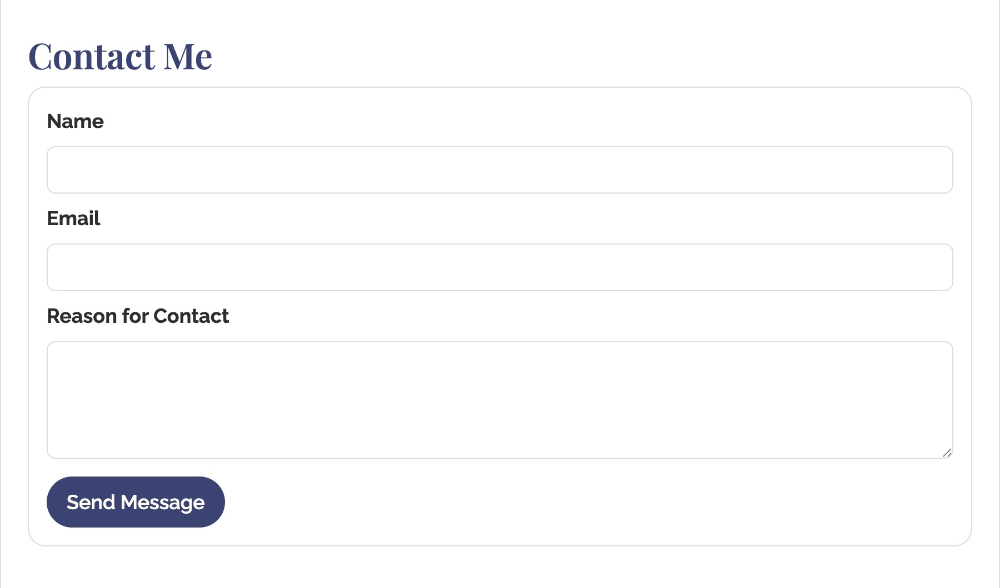
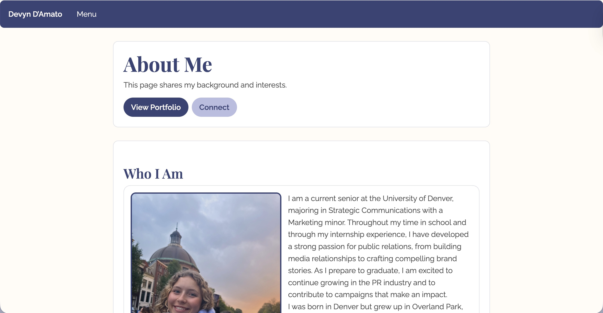
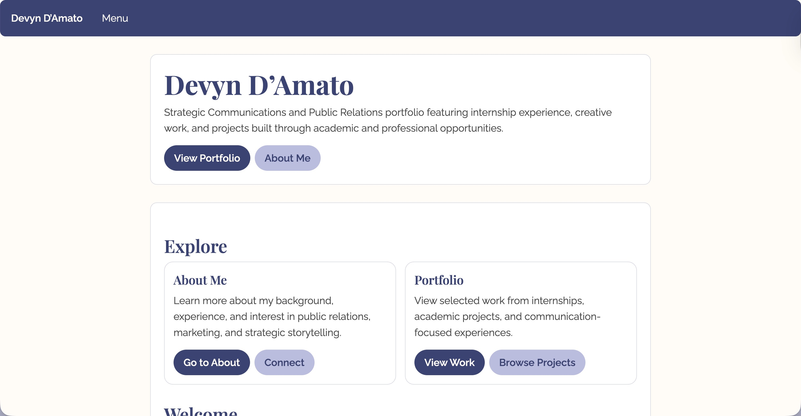

Homepage
The homepage introduces the site and directs visitors to the most important sections like the portfolio, about page, and contact information.

The homepage introduces the site and directs visitors to the most important sections like the portfolio, about page, and contact information.

The About page provides background information about my education, interests, and professional goals while maintaining the same visual style as the rest of the site.

The contact form allows visitors to send messages directly through the site, creating an easy way for potential employers or collaborators to connect with me.